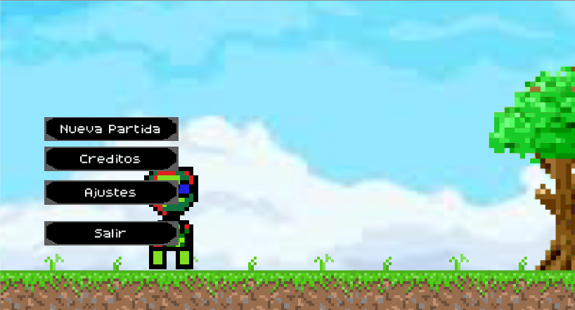
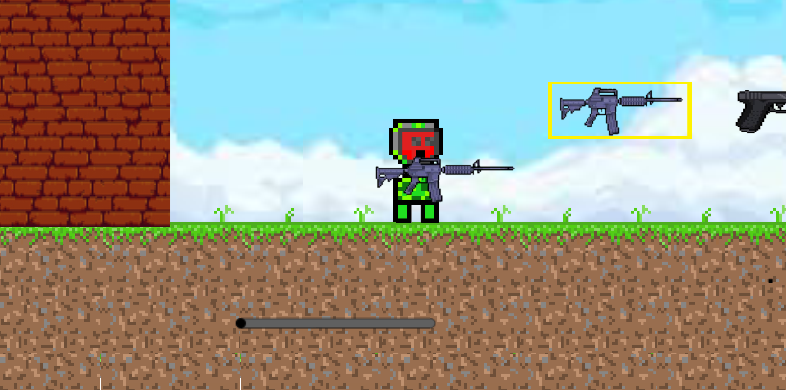
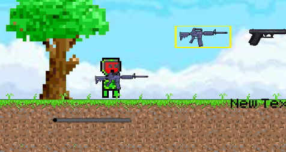

Inicio
Contacto
Pagina oficial y mas informacion
Iniciar sesion con google
Jump To Survive Prologue
Peso Del Juego: 117 MB
Terror / Accion / Zombie / 2D / indie
Descargar
juegos Creado por:
Untitled(Games)
Requisitos Minimos
Windows: XP/Vista/7/8/10
Ram: 300 MB
Tipo de sistema: 32/64 Bits
Procesador: 1.5 GHz



Ver Comentarios